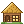
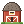
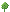

Herdewvalley
A quiet garden for Herdr. Pick a palette, a season, and a time of day; the window below restyles in place.

~1
website2No agent status yet. Agents show up here when they report their status.
 Claude Codekeybinds · 1working
Claude Codekeybinds · 1working Codexkeybinds · fix loginblocked
Codexkeybinds · fix loginblocked OpenCodewebsite · 2done
OpenCodewebsite · 2done Geminiexperiments · 1idle
Geminiexperiments · 1idle 1
1
 fix login
3
Files
Changes
fix login
3
Files
Changes
Nothing planted yet
A space is a place to work: a folder, its tabs, and the agents you start there. Open one and it gets a home in the valley.
- Open a spaceIt gets a home in the sidebar.
- Start an agentA villager moves in. The + in the tab bar starts any agent you have installed.

Watch the yardIt shows how the work is going: watering while working, a “!” when blocked, a harvest when done.
Villagers
One per agent program, drawn the way farm-game villagers are. The sidebar shows each from the waist up, and a tab with an agent in it shows that villager's face. They dress for the season: lighter colours in spring, warm ones and a scarf in autumn, and a coat, scarf, and mittens in winter.
 Claude Code
Claude Code Codex
Codex OpenCode
OpenCode Gemini
GeminiHomes
Each space gets a home when you create it and keeps it when you rename or reorder.
Status line: Gardener
🧑🌾 the model, your gardener. 🏡 the folder, a home like the spaces in the sidebar. 🌿 the git branch. 🪙 what the session has cost. 🌅 ☀️ 🌙 session time, with the sky for the time of day.
🪴 how full the context is; the plant grows from 🌱 to 🌿 to 🪴 to 🌳. 💧 your 5-hour usage. 🌾 your 7-day usage. The third line names each meter and says when the two limits reset.
First run
Switch State to First run to see the window before any space or agent exists. The yard is an empty plot: a staked-out lot with a signpost, bare beds, and nobody in it yet.
New space in the sidebar or in the middle of the window builds the first home. The same look returns whenever every space is closed.
Text over the picture
The valley sits behind the panes, so it is shown soft: at 65% strength with a light blur. Hard pixel edges, stars, and falling leaves then stop looking like punctuation in the text.
Use the Background picture switch above to compare sharp, faded, blurred, and soft, with Session set to Full of text. The Herdewvalley panel has a strength and a blur slider to set your own.
Four seasons
The valley and the yard follow the calendar. Spring: trees in blossom, tulips, seedlings, petals in the air. Summer: the valley as it was, with sunflowers in the yard. Autumn: orange and gold trees, pumpkins, falling leaves, a full moon. Winter: snow on the roof, bare trees, a frozen pond, a snowman.
Winter work is different too. A working villager clears snow with a shovel instead of watering, each crop sits under a glass cover, and the flower bed is wrapped in burlap.
Seasons start on 20 March, 21 June, 22 September, and 21 December, and are swapped south of the equator. Open Herdewvalley in the sidebar to hold one season all year.
Dawn, day, and night
The palette, the valley, and the sun or moon in the status line change together. At dawn the sun comes up between the peaks, mist lies in the valley, and a rooster is on the fence. At night the windows light up and fireflies come out.
With Auto on, the look follows your clock: dawn from half an hour before sunrise, day from an hour and a half after it, and night from sunset. Open Herdewvalley at the bottom of the sidebar to choose Paper, Sand, or Blossom, hold a season, switch to fixed hours, pick a look by hand, or turn the animations off. Settings below it stays Herdr's own.